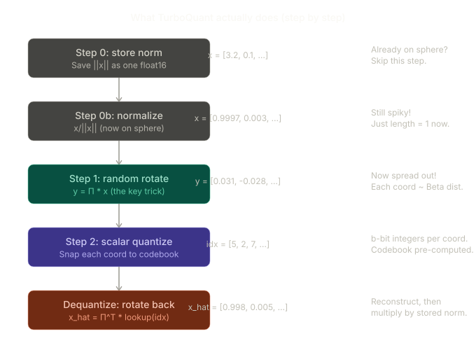

Google’s TurboQuant has been in the news and rightly so, apart from moving billions in the market, the numbers speak for themselves, to quote from the paper “despite being more than 4×quantized, achieves the same exact performance as the uncompressed baseline”. So, I started digging into the paper and yet again this is a classic example of good research, you come up a few good ideas and then combine them together to make an awesome idea. And they do so with mathematical rigor borrowing concepts from high-dimensional geometry and information theory.
For those of us with a less theoretical and a more phenomenological approach to deep learning, or to put it bluntly an aversion to dense mathematical proofs, wouldn’t it be good to build some intuition around the key ideas in the paper. So, here is an attempt to understand TurboQuant and why it works, I’ll give a background of quantization and then move on to the ideas in the paper. Feel free to skip sec 1. if you are well versed with the quantization of LLMs and the need for it. Note that this is not to be treated as a monograph for TurboQuant but more of an “aide” that can help you dissect the math in the paper.
1. Why quantize your LLMs
In a previous blog post, I looked at the weight distributions of various open-source LLMs using KDE plots. The sparsity patterns were striking, billions of parameters, many near-zero. But weights are only half the memory story. The other half (or more) is activations, and specifically the KV cache. If you recall the scaled dot-product attention, a.k.a. the attention equation: \[ \text{Attention}(Q, K, V) = \text{softmax}\!\left(\frac{QK^\top}{\sqrt{d_k}}\right)V \]
where
- \(Q \in \mathbb{R}^{n \times d_k}\) is the query matrix,
- \(K \in \mathbb{R}^{n \times d_k}\) is the key matrix,
- \(V \in \mathbb{R}^{n \times d_v}\) is the value matrix,
- \(d_k\) is the dimension of each key/query vector,
- \(QK^\top\) computes the pairwise similarity between every query and key, and
- \(\frac{1}{\sqrt{d_k}}\) is a scaling factor that prevents dot products from growing large and pushing softmax into saturation.
During inference, \(Q\) is computed fresh for the current token only but \(K\) and \(V\) are needed from all previous tokens. Rather than recomputing the key and value projections for every past token at every step, you cache them. This cache grows linearly with sequence length. A quick back-of-the-envelope calculation could tell you-
For Llama-3.1-8B : 32 layers, 8 KV heads, 128-dim per head.
At 128K context length: 128,000 tokens × 32 layers × 8 heads × 128 dims × 2 (keys + values)
Each value in float16 (2 bytes) Total: 128,000 × 32 × 8 × 128 × 2 × 2 bytes ≈ 16 GB
And that is just for KV cache, so there is a strong case to quantize these.
1.1 Not all dimensions are created equal
But there are some obvious gotchas when quantizing, first of all it is lossy, you lose information when quantizing the KV cache. Secondly, and more importantly, the components of a high-dimensional vector aren’t equal, some carry more variance, some less, they may be correlated and some might be more important for your task than the others, e.g. the Super Weight paper by Apple shows this, even my own pruning study aims to quantify and rank the importance of these vectors- CS-Prune. With KV vectors, a handful of channels carry most of the numerical weight. The rest are comparatively tiny. This is a well-documented property of transformer activations whereby studies have all observed these “outlier channels”. If you naively quantize each component independently with a uniform grid, you’re wasting bits. So, there are hundreds of papers out there with tricks to tackle this and TurboQuant is one of them.
Let’s play around with the widget below (thanks to my co-author Claude Opus 4.6 for writing the code for it) to build an intuition for spiky KV cache. Set the quantization slider to 2 bits and look at the bottom-right chart: per-coordinate quantization error. The outlier channels (coral bars) have dramatically larger errors than the rest. Why? A uniform quantization grid allocates the same number of levels across the entire range [min, max]. If one channel reaches ±20 while most channels live in ±0.5, those 4 levels (at 2-bit) must span a range of 40 — giving each level a width of 10. For the channels that vary by only ±0.5, that’s a ridiculously coarse grid. You’re wasting 3 of your 4 levels on values no channel ever takes. Switch to uniform (ideal) vectors and the problem vanishes — energy is spread evenly, every channel benefits equally from quantization, and the errors drop dramatically. This is the core observation that motivates TurboQuant: if only we could make every channel carry equal energy, naive per-coordinate quantization would work well. And as we’ll see in the next section, that’s exactly what a random rotation does.
2. Random rotation: Why high-dimensional spheres have no spiky points
TurboQuant’s first big idea is random rotation, above we saw that all dimensions are not equal and uniform quantisation would be wasting bits. Some other approaches learn a per-channel scaling (like SmoothQuant), or compute min/max statistics per block (like GPTQ and AWQ). But these are data-dependent and they can’t adapt to distribution shifts during generation which is not something you want in your deployed LLM.
But TurboQuant takes a different path, instead of adapting the quantizer to the data, it transforms the data so that any simple quantizer works well. And that transformation is the random rotation of the vector. To quote-
We apply a random rotation to the input vectors, thereby inducing a Beta distribution on each coordinate, irrespective of the input vectors themselves. In high dimensions d, the distribution of each coordinate converges to a Gaussian distribution N(1,1/d) due to concentration of measure and the central limit theorem.

But won’t spread-out vectors become spiky? An obvious question to ask, and it’s true in low dimensions, rotate [0.707, 0.707] by 45° and you get [1, 0]. You just created a spike. In 2D, rotation is a zero-sum game. But on a high d dimensional sphere there is nowhere to be spiky. A unit vector in d = 1000 dimensions must satisfy x₁² + x₂² + … + x₁₀₀₀² = 1. If one coordinate were “large”, say x₁ = 0.5, that single coordinate would consume 25% of the total budget. The remaining 999 coordinates share the rest. But concentration of measure tells us this is astronomically unlikely for a random point on the sphere. The expected value of |xᵢ| is roughly 1/√d, and deviations beyond a few multiples of this are exponentially suppressed.
Again, let’s resort to the widget below in building the intuition of how rotating the vectors removes their “spikyness” and smoothens their distribution.
Drag the dimension from 3 to 500 and note the following:
At d = 3: The angle histogram (top-left) is spread broadly from 0° to 90°. Some rows of Π happen to point near x, others point nearly perpendicular. The resulting coordinates (top-right) are wildly unequal, some large, some tiny. The before/after chart below these shows the spike didn’t fully disappear.
At d = 50: The angle histogram is already tightening around ~85°. Most rows of Π make roughly the same angle with x. The coordinates are becoming more uniform.
At d = 500: The angles are packed into a narrow band around 89°. Every single row of Π is almost exactly perpendicular to x. The coordinates are all nearly the same tiny magnitude. The before/after chart shows the spike has been completely levelled.
The bottom chart shows this concentration quantitatively — the standard deviation of angles drops from ~25° at d=3 to ~3° at d=100 to ~1° at d=500.
Now to complete the picture from the flowchart to widget above, here is the mechanism in full:
Step 1: Each new coordinate of Π X is a dot product. Step 2: The rows of Π are random directions on the sphere. In high dimensions, a random direction makes an angle with any fixed vector x that concentrates tightly around 90° Step 3: Since all angles are ≈ 90°, all cosines are ≈ 0, with small random fluctuations of order 1/√d. Therefore all coordinates have roughly the same magnitude, regardless of where x pointed originally. The paper gives theory derived upper and lower bounds for these (or errors in these) Step 4: The small fluctuations around cos(90°) = 0 follow the Beta distribution from Lemma 1, which converges to a Gaussian N(0, 1/d) in high dimensions, for simplicity let’s just assume we are working with higher dimensions.
The rotation doesn’t “redistribute variance.” It re-expresses x as dot products with d random directions, and in high dimensions, those dot products are all nearly identical in magnitude because every random direction makes nearly the same angle with x.
Thus, the distribution of Π X becomes approximately gaussian and that is easy to quantize with simple clustering method, for b bit quantization, there are \(2^b\) clusters which can quantize the gaussian distribution.
3. The bias problem and its fix
Honestly, the paper could have ended there but the authors saw that at 2-3 bits of quantization, the \(2^b\) clusters introduces an extra error. Recall the attention equation earlier, there is a dot product between Q and K which is then fed to softmax activation.
\[ \text{softmax}\!\left(\frac{QK^\top}{\sqrt{d_k}}\right) \]
Softmax is a nonlinear function, and scaling its inputs changes the shape of the output distribution. Smaller logits → flatter attention → the model loses its ability to focus on the most relevant tokens. The problem isn’t that the reconstructed (unquantized) vectors are far from the originals. The problem is that the inner product ⟨q, k̃⟩ between a query and a quantized key is systematically too low. The quantizer has a multiplicative bias: it estimates ⟨q, k⟩ as roughly α·⟨q, k⟩ where α < 1.At b=1, this bias factor is 2/π ≈ 0.637, i.e. your attention logits are 36% too small. At b=2, it’s around 0.92. At b=4, it’s 0.998 — negligible.
The authors’ fix is elegant. Instead of redesigning the quantizer to be unbiased, they keep the quantizer and correct the bias after the fact. The recipe being, let’s say you have b bits you can use for quantization, it reserves 1 bit out of these for storing the sign of the error in the quantized vector. The error being the difference between the original vector and the vector recreated from the quantized vector (reconstructed). This is what they call the QJL term, and it exactly compensates for whatever bias was introduced.
4. Closing
Sections 2 & 3 together should tell you what I meant when I said that the paper combines “a few good ideas into an awesome idea”. Would highly recommend going through the rigorous mathematical proofs in the paper which also quantify what the upper and lower bounds in the errors of the approximations, which our intuition above will most likely not be able to get.
And what the authors have achieved is remarkable:
At 3.5 bits per channel (LongBench with Llama-3.1-8B) it TurboQuant matches the full 16-bit baseline, a 4.5× compression of your KV cache without any accuracy loss. Not on short contexts, not on long contexts, not on needle-in-a-haystack retrieval. And with a theoretical proof you should be within 2.7× of optimal.